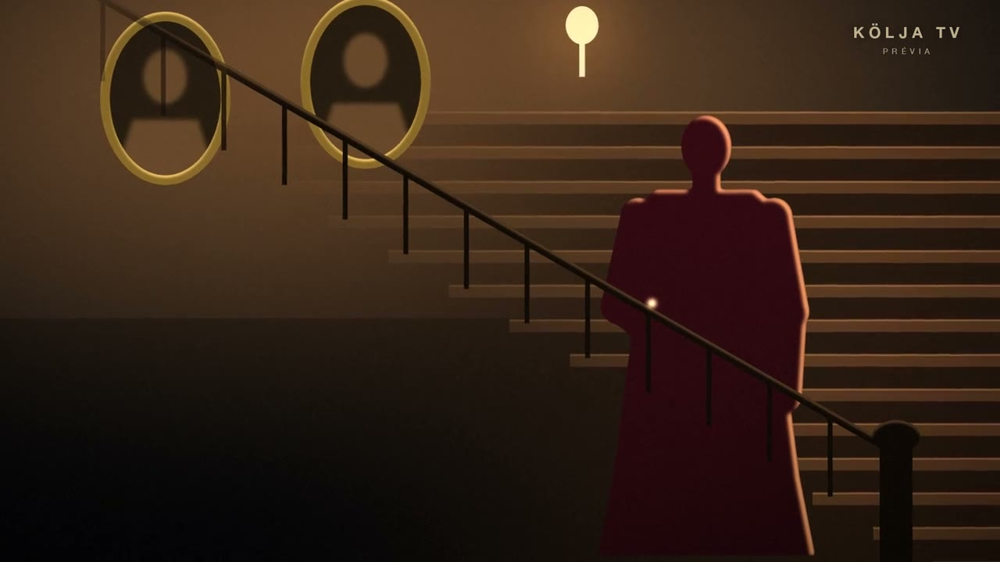

Hoje à noite
A noite todaHoje na KÖLJA TV
Grade completaOs filmes de hoje
ProgramaçãoNovela da casa · Prévia do capítulo 1
Segredos da Serra
Noite de tempestade na mansão dos Albuquerque, no alto da serra de Petrópolis. Três da manhã, a geladeira aberta, e comendo o pudim da família está um homem que foi enterrado há cinco anos.
A prévia passa nos intervalos dos filmes da noite e da madrugada. Ou assista aqui.

Com legenda em português
Todos com LEGOs filmes com o selo LEG têm legenda em português e em inglês.